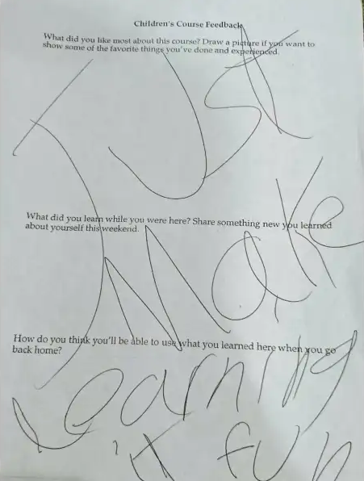
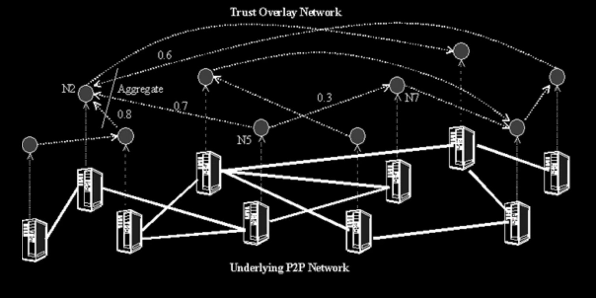

This post is part of an ongoing letter series with Spencer and some other internet friends about what we think the future of the Internet could look like. Find more letters over on our (we)bsite

One of the most important factors as to what gives objects a felt sense of ‘home’ or ‘coziness’ is the degree to which the object involves you in its own completion. The home is a personal statement. The exact layout they choose to layout posters on the wall; the positioning of the plants; how they choose to let light illuminate the hallways; the colours of the walls: these are all expressions of its residents.
Does the built environment enable agency for its residents? To have agency is the ability and freedom to act in their immediate context or environment. Thus, to have agency in an environment — regardless of whether the space is digital or physical — first supposes them to have ownership and ability to assert themselves in the space.
In the realm of game philosophy, we call the amount of agency the agential distance: the gap that the game designer explicitly leaves for the player to occupy. This gap is shaped by the rules/constraints of the game.
This, to me, explains why places like Minecraft hold such timeless feelings of home-ness. It was the first time the world felt malleable and that I could do something about it. In Minecraft, it was the literal act of ‘modding’ the game and its rules to fit how you and your friends want to enjoy it — the game is your own to define how you want to play it.
Like Calvinball in Calvin and Hobbes, the only rule of the game is that it can’t be played the same way twice! The whole point of the game is that the players come together to actively reconfigure and rearrange the game.
Today, it’s no longer a controversial statement to say that, as citizens of the internet, we have lost our ability to shape the web and make it a home — we live on rented ground.
In the platform giant’s desperate act to serve everyone, they end up serving no one well.
“People cannot be genuinely comfortable and healthy in a house which is not theirs. All forms of rental — whether from private landlords or public housing agencies — work against the natural processes which allow people to form stable, self-healing communities.” (p.393, Your own home, A Pattern Language)
And we also know that these rental areas in the physical world are the first to fall ruin.
“Rental areas are always the first to turn to slums. The mechanism is clear and well known. See, for example, George Sternlieb, The Tenement Landlord (Rutgers University Press, 1966). The landlord tries to keep his maintenance and repair costs as low as possible; the residents have no incentive to maintain and repair the homes — in fact, the opposite — since improvements add to the wealth of the landlord, and even justify higher rent. And so the typical piece of rental property degenerates over the years. The landlords try to build new rental properties which are immune to neglect — gardens are replaced with concrete, carpets are replaced with lineoleum, and wooden surfaces by formica: it is an attempt to make the new units maintenance-free, and to stop the slums by force; but they turn out cold and sterile and again turn into slums because nobody loves them.” (p.394, Your own home, A Pattern Language)
How might we make it possible for the average layperson to be able to change and adapt software for their own needs?
The wonderful bit about software (and specifically the web) that feels uniquely special is that you don’t need permission to make things. The internet is the first place people got to build real things without needing to ask someone if they could.
We should give people the ability to own technology, to bring it into their own complex life stories. We should involve people in its own completion. The real use cases may be the ones waiting to be discovered. One of my favourite examples is the French bistro.
The small Parisian restaurants serving home-cooked meals in very modest settings—like the cafe before it, was an invention. Many tales exist of its origin. Some say it was working-class landlords opening their kitchens for extra income. Others say it was the Auvergnats, immigrating to Paris from what is today central-south France, who first worked as rag-pickers, then wood and coal sellers, then metalworkers, who created small working-class restaurants to supplement their income. Either way, it was not planned or engineered, but simply not-disallowed. There were no rules in place to stop this invention.
(Simon Sarris, Welcome, ghosts, emphasis added)
Agentic software designs for and explicitly allows user-made desire paths and folk-usages of software. People will use software in whatever informal, distributed ways that emerge from real world contexts. Folksonomies are a great example of these informal taxonomies developed by users on social sharing platforms. Tumblr tags, for example, have adapted to become not just a form of tagging or organizing, but also metacommentary, memes, and other comedic content.
An Yokochō alleyway in Tokyo, Japan. There is an inherent smallness to the design that fosters communication and character. Owners say that the smallness encourages genuine communication between staff and customers as well as among characters, much unlike the homogenization of shopping malls and chain stores (paraphrased from Emergent Tokyo: Designing the Spontaneous City). How might we create Yokochō alleys of the internet?
Agentic software embodies a Hundertwasser flavour of design where:
- The resident has access to the same tools as the architect.
- Everything is writeable, everything is rewriteable.
- People can solve their own problems.
For this to happen, we need to reduce the burden of building software. Not all tools need to be complex power tools that require university degrees to operate. Progress can mean simplifying tools to enable the layman to shape his immediate environment to his taste. How might we make software not just the tools of the engineering elite but the layperson as well?
Like any society, it is not only architects, builders, or engineers that move us towards this collective consciousness. We need people to bring themselves and assume new identities—perhaps where the role of ‘technologist’ is fluid and all-encompassing. Where ‘technologist’ is everyone and anyone concerned with the role of technology, empowered to use it to shape their experience in our pervasive digital world.
(Chia, There is an internet that is mine & I would like you to live in it with me)
We must make it possible for the average layperson to be able to change and adapt software for their own needs; for them to experience creating software not like a professional chef, but a home cook.
First, we need to address the double-edged sword that is scale. Scale, of course, can be a good thing. Economies of scale enable us to have cheap hosting, comprehensive web search, and many more luxuries we enjoy on the web today. However, the Silicon Valley mindset of always asking what the billion-dollar version of your idea is and how you can get everyone using it is slowly poisoning how we think about software.
Realistically, when most of us want to create software, the intention isn’t to release something that the whole world will end up using. Yet, with all the knowledge you end up needing to be able to do it, it seems like everything we release into the world needs to be production ready!
For someone to make a web service today, they need to know
- HTML, CSS, and JavaScript
- How to pick and choose a hosting provider to put their service on the web
- Basics of DNS so they can use a custom domain
- Choosing a database, host it, and figure out how to safely talk to their database from their service
- How to talk to APIs without leaking secrets
- … and many more I’m not mentioning here (especially if they choose to make something peer-to-peer)
I spent a lot of time around university-aged students first learning software engineering and there is a really large gap between how easy it is to get a static website on the web and how difficult it is to add a database to it. This, for most people, is where they decide that software is too difficult and give up.
It has become so difficult to learn that it has almost killed software’s viability as a tool for expression. Imagine if, every time you cooked a meal for your friends or family, world-class critics came in to judge and prod at your food. Or if, every time you wanted to write a letter to your partner, the postal service would refuse to send it if it contained even a single grammatical error.
Learning how to store passwords or add OAuth2 to your toy web site is not fun. So much of programming today is busywork, or playing defense against a raging internet. You can do so much more, but the activation energy required to start writing fun collaborative software is so much higher you end up using some half-baked SaaS instead.
Writing a web service for use by your friends should not be a form of combat, where you spend your days worrying about XSS attacks or buffer overflows. You should be focused on creating something new and wonderful in a place without bad people hounding you.
(David Crawshaw, Remembering the LAN)
It wasn’t always like this. In fact, the internet used to be pretty flexible. In the days when we still had plenty of IPv4 addresses to hand out to computers, when CORS and NAT hadn’t made the web peer-to-peer hostile, LANs meant it was easy to learn about computers and experiment with things. I could just run something on my machine and open the port to my computer from my router and anyone in the world could see it.
Unfortunately, we can’t just naively revert back to this. It is no secret that our modern internet is peer-to-peer hostile. Almost all of the communication we do on the web is fully client-server because that was the easiest way to make things secure and work.
Part of this comes down to the entrenched nature of how the web is structured. Our browsers and home computers can only speak and request from services, but we’ve lost the ability to listen for others and serve services of our own. Security is a hard problem to solve and there are a lot of malicious people on the web. But going down this path closes many doors for what we could be doing with the internet.
How do we make making on the web easy and fun again?
 From the blogpost introducing CoCo
It’s true that networks are fundamentally sloppy and all sorts of broken. But broken does not mean unmendable.
This latter point is one that Chia talks about in her articulation for a future of the internet. To declare it unmendable or unfixable is to abandon the many people that still need these deeply broken technologies.
Starting a new system from scratch with a grand vision is not the way to do this either. History has shown us that trying to purge everything and build out a totalizing vision can have terrible implications, regardless of whether they succeeded or not.
To reform the web is not to wipe everything and start over tabula rasa, but rather to move through the adjacent possible, figuring out how we can improve the existing condition of those trapped by these systems without uprooting them.
The internet is based on Postel’s Law: work the world as it already is, not as you wish it were. In fact, this is how the Internet today evolved. It was bootstrapped on top of existing telephone networks, exapting existing phone hardware to get it off the ground. It didn’t need to deploy expensive new hardware or lay down new cables, it just conformed to existing infrastructure.
Just as the early internet was built on top of telephone networks, we can build a new set of cozier, smaller networks on top of an internet that is showing its age.
Maybe we bring back the philosophy of LANs, but rather than networks based around closeness in physical distance bounded by routers, we created networks based around closeness in social and trust space1? What about Communal Computing Networks?

We could have:
- Countless local networks, many overlapping with each other.
- A larger network of networks to allow for cross-network collaboration.
This is a design pattern we have seen work well in the past with email and Matrix. These platforms often function as networks of networks, allowing communities within them to have control over their own smaller networks but still allowing users on different providers to interact with each other seamlessly.
With this infrastructure in place, we can also think about what community owned applications may look like. Perhaps this is infrastructure that will allow us to not necessarily decentralize but rather decenter servers, moving them from the source of truth to a supporting role.
Perhaps this looks like people having ownership of their own data. They could use servers to help make it available to their peers when they are offline but they are never essential to people accessing their own data.
Your peers, friends, and colleagues could help replicate, host, and process indexes for data they are also interested in. A big community corkboard of all the things the group may be interested in. In this world, anyone could write applications that pull in data from these indexes, making it easy to experiment and just make things that work on the web.
As we spend more time on the web, it’s clear what may have worked for a smaller web no longer works today. In today’s web, the powerful become more powerful, the rich become richer. The day-to-day users have no say over the terms of service we are served. We live in a feudal web.
It used to be the case that you needed to train to become a scribe to write words for any reason. But just as pens were taken out of the hands of the scribe during the Reformation of Europe, we must take the code out of the hands of software engineers and share it with the masses.
Writing software shouldn’t take a degree and many years of training, it should be as simple as making a meal at home or writing a letter to a friend. Doing so will lead to a more diverse and resilient internet, with a greater variety of voices and perspectives represented so we may build an internet that works for us.
Let’s make the web feel agentic again.
Hello stranger! If you’re still reading by this point, then you’ve probably been thinking about similar things for a while. I want to extend an open invite to you to lend your thoughts too.
Join us as we write about what it would be like to make these fictions become reality because the way these ideas become powerful and revolutionary is to have more people contribute to them.
Thanks again to Anson, Spencer, and Vivian for some really clarrifying feedback.
Footnotes
-
In a magic world where IPv6 was adopted by everyone, every computer and device would have a unique address to send and receive things from. It would enable people to host things again, to have their own little home dinner parties instead of always going out to the restaurant. Unfortunately, IPv6 adoption has been really slow and we’re stuck in a world where IPv6 isn’t widespread enough to assume that most users have an IPv6 address as of yet. ↩